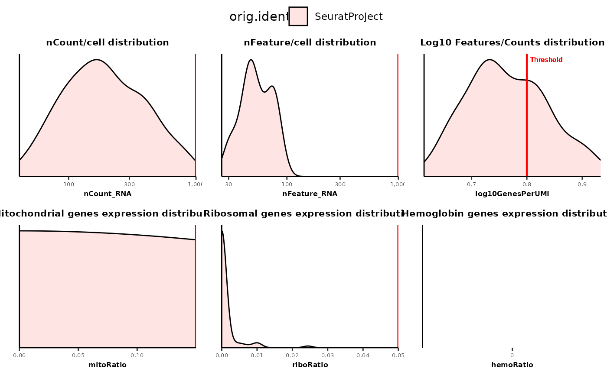
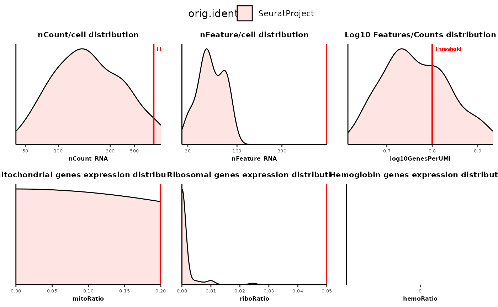

This function is a wrapper around qc_density_plot. It creates density plots for different QC metrics (nCount, nFeature, log10GenesPerUMI, mitochondrial gene ratio, ribosomal gene ratio and hemoglobin gene ratio) and wrap them up into a single plot.
Usage
plot_qc_metrics(
seurat_object,
assay = NULL,
fill = "orig.ident",
fill_vector = NULL,
alpha = 0.2,
count_thresh = 1000,
feature_thresh = 1000,
log10GenesPerUMI_thresh = 0.8,
mito_thresh = 0.15,
ribo_thresh = 0.05,
hemo_thresh = NULL,
return_list = FALSE
)Arguments
- seurat_object
Seurat object to use to create the plot.
- assay
Assay to use to select nCount and nFeature meta.data. By default it takes the current active assay.
- fill
Name of the column to use to pass to aes(fill) in geom_density. It is used to split the data into groups and draw a density plot for each value of it. Default to "orig.ident".
- fill_vector
Optional named vector used to assign fill colors to the different group of fill variable. Default to NULL.
- alpha
Value to pass to alpha in geom_density. Default to 0.2.
- count_thresh
Value of the count threshold line to pass to qc_density_plot(threshold). Default to 1000.
- feature_thresh
Value of the feature threshold line to pass to qc_density_plot(threshold). Default to 1000.
- log10GenesPerUMI_thresh
Value of the log10GenesPerUMI threshold line to pass to qc_density_plot(threshold). Default to 0.8
- mito_thresh
Value of the mitoRatio threshold line to pass to qc_density_plot(threshold). Default to 0.15.
- ribo_thresh
Value of the riboRatio threshold line to pass to qc_density_plot(threshold). Default to 0.05.
- hemo_thresh
Value of the hemoRatio threshold line to pass to qc_density_plot(threshold). Default to 0.NULL.
- return_list
Whether to return a list of ggplot objects (TRUE) or a ggarrange object with all the plots (FALSE). Default to FALSE.
Examples
data("pbmc_small")
pbmc_small <- calculate_qc_metrics(pbmc_small)
# Basic plot
plot_qc_metrics(pbmc_small)
#> Warning: All aesthetics have length 1, but the data has 80 rows.
#> ℹ Please consider using `annotate()` or provide this layer with data containing
#> a single row.
#> Warning: All aesthetics have length 1, but the data has 80 rows.
#> ℹ Please consider using `annotate()` or provide this layer with data containing
#> a single row.
#> Warning: All aesthetics have length 1, but the data has 80 rows.
#> ℹ Please consider using `annotate()` or provide this layer with data containing
#> a single row.
#> Warning: All aesthetics have length 1, but the data has 80 rows.
#> ℹ Please consider using `annotate()` or provide this layer with data containing
#> a single row.
#> Warning: All aesthetics have length 1, but the data has 80 rows.
#> ℹ Please consider using `annotate()` or provide this layer with data containing
#> a single row.
#> Warning: All aesthetics have length 1, but the data has 80 rows.
#> ℹ Please consider using `annotate()` or provide this layer with data containing
#> a single row.

# Specify other thresholds
plot_qc_metrics(pbmc_small, count_thresh = 750,
feature_thresh = 900,
mito_thresh = 0.2)
#> Warning: All aesthetics have length 1, but the data has 80 rows.
#> ℹ Please consider using `annotate()` or provide this layer with data containing
#> a single row.
#> Warning: All aesthetics have length 1, but the data has 80 rows.
#> ℹ Please consider using `annotate()` or provide this layer with data containing
#> a single row.
#> Warning: All aesthetics have length 1, but the data has 80 rows.
#> ℹ Please consider using `annotate()` or provide this layer with data containing
#> a single row.
#> Warning: All aesthetics have length 1, but the data has 80 rows.
#> ℹ Please consider using `annotate()` or provide this layer with data containing
#> a single row.
#> Warning: All aesthetics have length 1, but the data has 80 rows.
#> ℹ Please consider using `annotate()` or provide this layer with data containing
#> a single row.
#> Warning: All aesthetics have length 1, but the data has 80 rows.
#> ℹ Please consider using `annotate()` or provide this layer with data containing
#> a single row.
